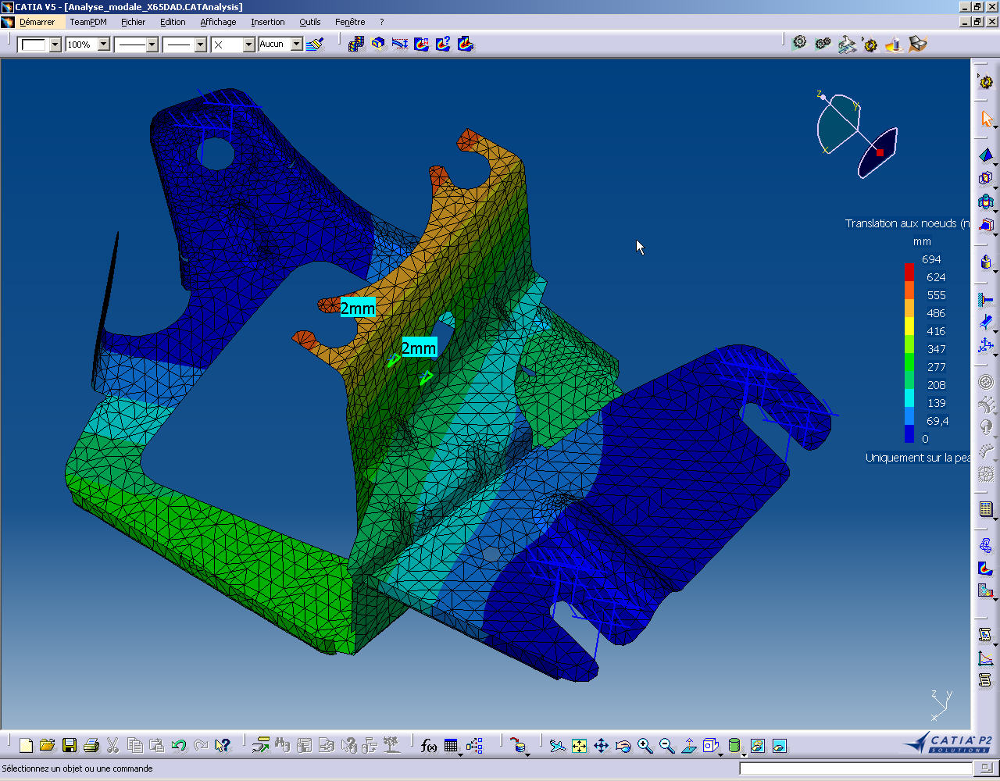
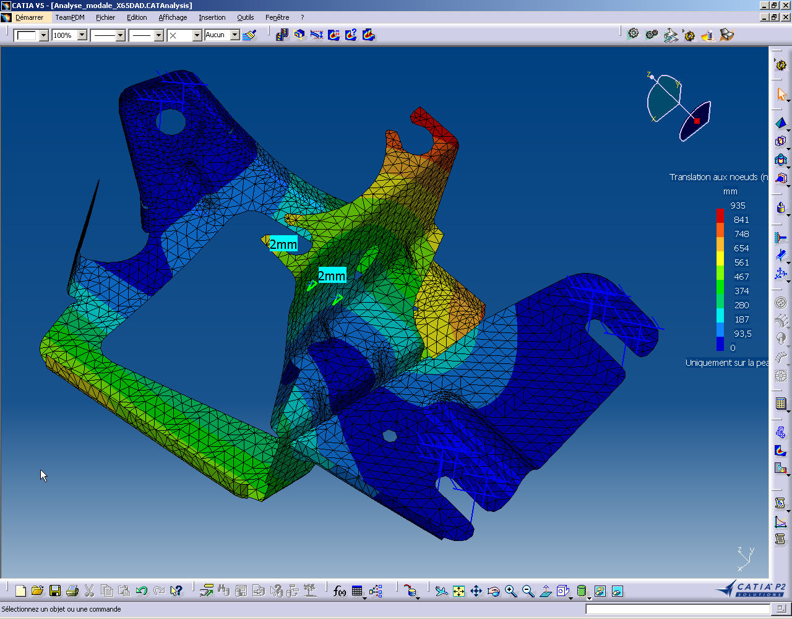
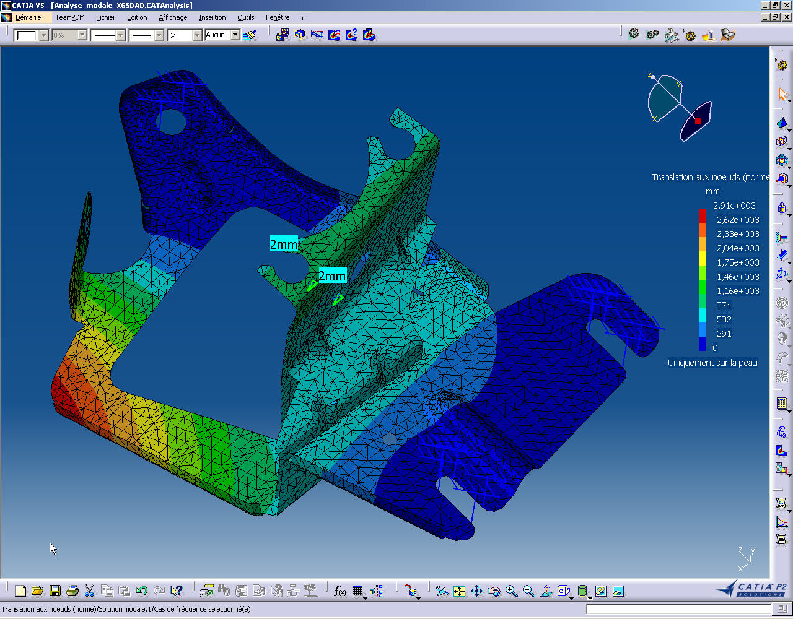
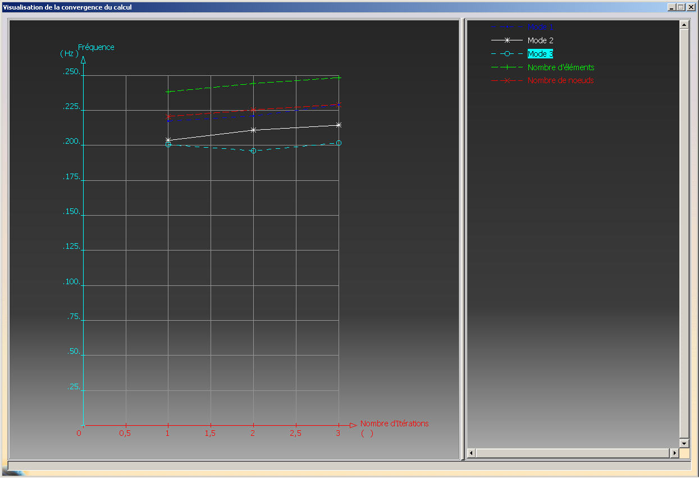

Analyse_modale_X65DAD
Le 10/01/2002
| Entité | Nombre |
|---|---|
| Noeuds | 3666 |
| Eléments | 6953 |
| Connectivité | Statistique |
|---|---|
| SPIDER | 231 ( 3,32% ) |
| BAR | 52 ( 0,75% ) |
| TR3 | 6670 ( 95,93% ) |
| Critère | Bon | Médiocre | Mauvais | Plus mauvais | Moyenne |
|---|---|---|---|---|---|
| Skewness | 6668 ( 99,97% ) | 2 ( 0,03% ) | 0 ( 0,00% ) | 0,738 | 0,191 |
| Distorsion | 6618 ( 99,22% ) | 52 ( 0,78% ) | 0 ( 0,00% ) | 42,883 | 18,719 |
| Stretch | 6670 ( 100,00% ) | 0 ( 0,00% ) | 0 ( 0,00% ) | 0,394 | 0,757 |
| Longueur Min. | 6722 ( 100,00% ) | 0 ( 0,00% ) | 0 ( 0,00% ) | 0,205 | 3,443 |
| Longueur Max. | 6722 ( 100,00% ) | 0 ( 0,00% ) | 0 ( 0,00% ) | 59,425 | 4,958 |
| Facteur de forme | 6670 ( 100,00% ) | 0 ( 0,00% ) | 0 ( 0,00% ) | 0,486 | 0,871 |
| Rapport de longueur | 6670 ( 100,00% ) | 0 ( 0,00% ) | 0 ( 0,00% ) | 3,398 | 1,530 |
| Matériau | Module de Young | Coefficient de Poisson |
|---|---|---|
| Steel.1.1 : Structural ( ASTM-A36 ) | 2,7e+011N_m2 | 0,266 |
| Nombre de noeuds | : | 3666 | |
| Nombre d'elements | : | 6953 | |
| Nombre de D.D.L. | : | 21996 | |
| Nombre d'elements de contact | : | 0 | |
| Nombre de relations cinematiques | : | 1698 |
Nom: RestraintSet.1
Nombre de fixations ponctuelles : 276
Nom: StructuralMass
| Nombre de lignes | : | 21996 | |||
| Nombre de coefficients | : | 449082 | |||
| Nombre de blocs | : | 1 | |||
| Nombre maximum de coefficients par blocs | : | 449082 | |||
| Taille de la matrice | : | 5 | . | 22 | Mb |
Masse structurelle : 6.989e-001 kg
Coordonnees du centre d'inertie
| Xg | : | 1 | . | 048e+002 | mm |
| Yg | : | -3 | . | 978e+002 | mm |
| Zg | : | 3 | . | 012e+002 | mm |
Tenseur d'inertie a l'origine: gmm2
| 1.771e+008 | 2.913e+007 | -2.191e+007 |
| 2.913e+007 | 7.448e+007 | 8.459e+007 |
| -2.191e+007 | 8.459e+007 | 1.201e+008 |
Structurelle: oui
| Nombre de lignes | : | 21996 | |||
| Nombre de coefficients | : | 21996 | |||
| Nombre de blocs | : | 1 | |||
| Nombre maximum de coefficients par blocs | : | 21996 | |||
| Taille de la matrice | : | 0 | . | 34 | Mb |
Masse additionnelle : 2.000e+000 kg
Coordonnees du centre d'inertie
| Xg | : | 1 | . | 080e+002 | mm |
| Yg | : | -3 | . | 420e+002 | mm |
| Zg | : | 3 | . | 450e+002 | mm |
Tenseur d'inertie a l'origine: gmm2
| 4.71978e+008 | 7.3872e+007 | -7.452e+007 |
| 7.3872e+007 | 2.61378e+008 | 2.3598e+008 |
| -7.452e+007 | 2.3598e+008 | 2.57256e+008 |
| Nombre de lignes | : | 21996 | |||
| Nombre de coefficients | : | 449082 | |||
| Nombre de blocs | : | 1 | |||
| Nombre maximum de coefficients par blocs | : | 449082 | |||
| Taille de la matrice | : | 5 | . | 22 | Mb |
Fixation: RestraintSet.1
| Nombre de singularites locales | : | 1813 | |
| Nombre de singularites en translation | : | 0 | |
| Nombre de singularites en rotation | : | 1813 | |
| Type de contraintes generees | : | MPC |
Fixation: RestraintSet.1
| Nombre de contraintes | : | 3787 | |
| Nombre de contraintes factorisees | : | 3787 | |
| Nombre de contraintes verifiees a posteriori | : | 0 |
Fixation: RestraintSet.1
| Methode d'optimisation de la numerotation | : | SLOAN | |
| Nombre de noeuds connectes | : | 3666 | |
| Largeur de front maximale en noeuds | : | 203 | |
| Largeur de bande maximale en noeuds | : | 1140 |
| Methode | : | SPARSE | |||
| Nombre de degres factorises | : | 18209 | |||
| Nombre de super-noeuds | : | 2132 | |||
| Nombre de termes du canevas compresse | : | 101035 | |||
| Nombre de coefficients | : | 1669335 | |||
| Largeur de front maximale | : | 449 | |||
| Taille de front maximale | : | 101025 | |||
| Taille de la factorisee (Mb) | : | 12 | . | 736 | |
| Nombre de blocs | : | 4 | |||
| Nombre de Mflops pour la factorisation | : | 3 | . | 028e+002 | |
| Nombre de Mflops pour la resolution | : | 6 | . | 696e+000 | |
| Pivot relatif minimum | : | 3 | . | 771e-007 | |
Frequence: FrequencySet.1
Fixation: RestraintSet.1
Masse: MassSet.1
La masse structurelle est prise en compte
Masse totale : 2.699e+000 kg
Coordonnees du centre d'inertie
| Xg | : | 1 | . | 072e+002 | mm |
| Yg | : | -3 | . | 565e+002 | mm |
| Zg | : | 3 | . | 337e+002 | mm |
Tenseur d'inertie au centre d'inertie: gmm2
| 5.705e+006 | -8.949e+004 | 6.887e+004 |
| -8.949e+004 | 4.401e+006 | -4.159e+005 |
| 6.887e+004 | -4.159e+005 | 3.450e+006 |
| Nombre de modes calcules | : | 3 | |||
| Type de conditions aux limites | : | encastrement | |||
| Nombre d'iterations deja effectuees | : | 0 | |||
| Nombre d'iterations effectuees | : | 3 | |||
| Precision relative demandee sur les valeurs propres | : | 1 | . | 000e-003 | |
| Precision relative obtenue sur les valeurs propres | : | 5 | . | 479e-005 | |
| Numero du mode |
Frequence Hz |
Stabilite |
|---|---|---|
| 1 | 5.4938e+001 | 5.9745e-010 |
| 2 | 1.2862e+002 | 3.9951e-007 |
| 3 | 2.0175e+002 | 5.4793e-005 |
Participation modale :
| Mode | Frequence Hz |
Tx (%) |
Ty (%) |
Tz (%) |
Rx (%) |
Ry (%) |
Rz (%) |
|---|---|---|---|---|---|---|---|
| 1 | 5.4938e+001 | 2.70 | 69.86 | 10.41 | 12.82 | 0.40 | 0.86 |
| 2 | 1.2862e+002 | 65.15 | 4.36 | 0.01 | 2.24 | 62.59 | 61.63 |
| 3 | 2.0175e+002 | 0.25 | 18.05 | 42.09 | 54.46 | 6.21 | 0.75 |
| Total | 68.09 | 92.27 | 52.51 | 69.52 | 69.19 | 63.24 |



Garphe de convergence
Pas 1 : Etat initial
Pas 2 : Bord tombé côté gauche
Pas 3 : Bord tombé partie basse
